무엇을 만드는 영상인가요
완성본부터 보면 이래요. 'Aero Noir'라는 가상의 고급 전용기 회사 사이트예요. 짙은 회색 구름 속을 검은 제트기가 날고, 오른쪽 위에 소리 켜기 버튼('SOUND ON')이 있어요. 아래로 내려가면 기체 카드, 전세기 영상, 공동 소유 카드, 문의 양식, 푸터까지 이어져요.
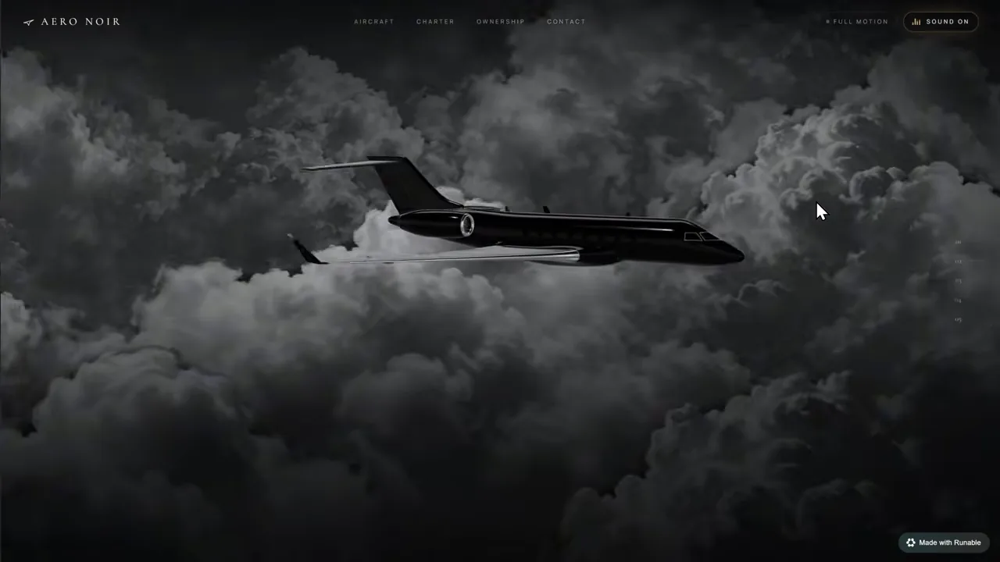
만드는 곳은 Runable이에요. 원하는 걸 말로 설명하면 웹사이트, 앱, 이미지, 영상까지 만들어 주는 AI(Artificial Intelligence) 빌더예요. 대시보드 가운데에 프롬프트 칸이 있고, 그 아래 메뉴가 세 묶음으로 나뉘어 있어요. Code에는 Websites·Apps, Productivity에는 Slides·Report·Sheets·Workflows, Content Creation에는 Video·Image·Audio·Carousels가 있어요. 프롬프트 칸 오른쪽에는 쓸 모델(Opus 5.5)이 표시돼요.
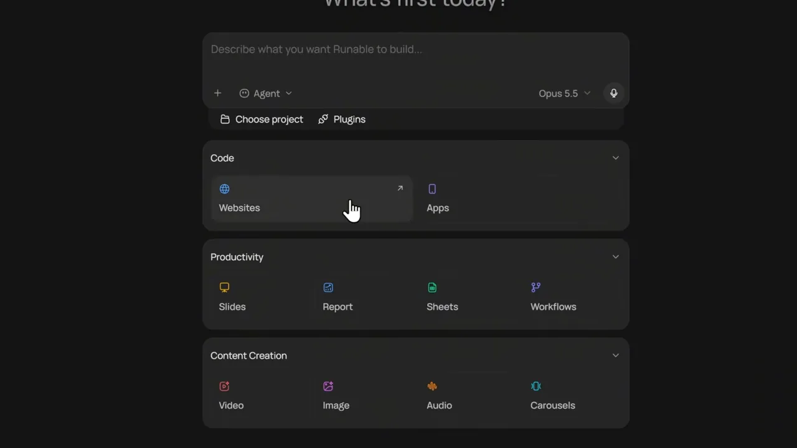
재료 준비는 참고 이미지 한 장으로 시작해요. 발표자는 Pinterest에서 'Black Private Jet' 사진을 내려받았어요. 실제로 올린 건 이 사진을 바탕으로 Runable에서 다시 만든 참고 이미지예요. 사이트에 들어갈 이미지와 영상도 모두 Runable 안의 생성 도구로 만들 거라고 미리 말해 둬요.

3D 모델은 따로 구해요
발표자는 먼저 참고 이미지와 짧은 프롬프트만 주고 한 번 만들어 봤어요. 3D 파일은 하나도 주지 않았어요. 그 결과가 아래 'NOCTURNE' 사이트예요. 밝은 구름 배경과 'One unbroken line, nose to tail.' 문구, 아래쪽 숫자 배치까지 꽤 깔끔해요. 그런데 발표자는 비행기 모델의 디테일이 실제처럼 보이지 않아 만족하지 못했다고 해요.

그래서 역할을 나눠요. 구름 같은 환경은 Runable이 만들게 두고, 제품이든 캐릭터든 화면의 주인공인 3D 모델은 직접 구한 파일로 넣어요. 발표자가 쓴 곳은 3D 모델 공유 사이트 Sketchfab이에요. 'jet'으로 검색하고 다운로드 가능 필터를 켜면 받을 수 있는 모델만 남아요.
고른 모델은 구름은 없지만 기체 자체가 잘 만들어진 검은 전용기예요. Download 3D Model을 누르면(로그인 필요) 아래 창이 떠요. 왼쪽 위 상자에 라이선스가 CC(Creative Commons) Attribution이라 '작성자 표기 필요, 상업적 이용 가능'이라고 적혀 있어요. 아래 목록에는 원본 blend와 변환본 USDZ(Universal Scene Description Zip), glTF, GLB가 있고, GLB는 텍스처 크기별로 8k·4k·1k 세 가지예요. 발표자는 꼭 GLB로 받으라고 해요.

발표자는 AI로 3D 모델을 만드는 도구도 많다고 덧붙이지만, 이번 영상은 이 모델로 끝까지 가요.
히어로 섹션 만들기
이제 GLB와 참고 이미지를 같이 올리고 첫 프롬프트를 넣어요. 발표자는 프롬프트를 노션에 미리 써 두고 통째로 복사해 붙여요. 이 프롬프트는 히어로 섹션 하나만 만들게 해요.
첫 프롬프트: 모델, 배경, 비행
첫 문단은 '첨부한 GLB 모델로 시네마틱한 고급 전용기 히어로 섹션을 만들라'예요. 그 아래 Aircraft and environment 단락이 이 영상의 요령을 담고 있어요. GLB는 형태·비율·재질을 그대로 살려 불러오고, 제트기 이미지는 구름·분위기·조명 참고용으로만 쓰라고 선을 그어요. 그다음 두 단락은 배경과 비행 방식이에요. 배경은 어두운 입체 회색 구름에 층진 깊이와 은은한 빛을 줘요. 비행은 기수를 수평으로 두고 곧게 앞으로 가게 해요. 선회, 큰 기울임, 눈에 띄는 상하좌우 흔들림은 피하고, 구름이 비행기를 스쳐 지나가게 해서 전진하는 느낌을 내요.
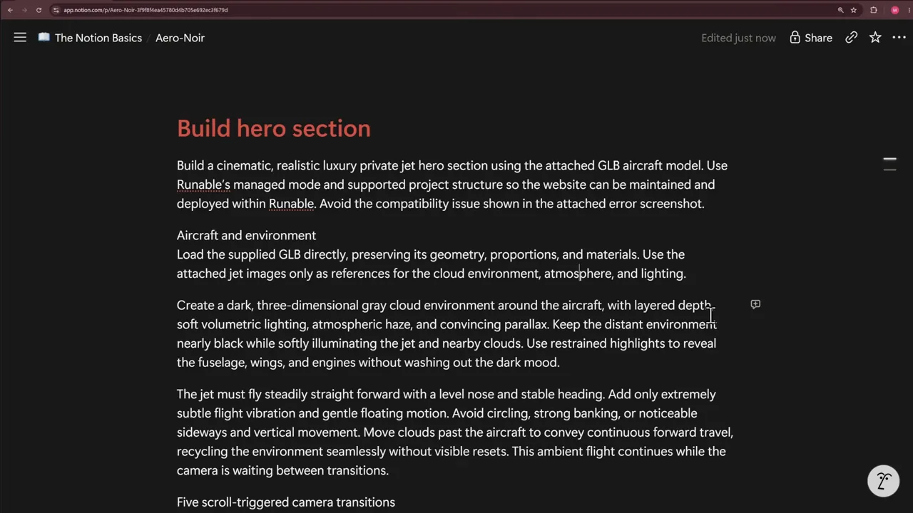
스크롤 한 번에 카메라 이동 한 번
스크롤 애니메이션은 Five scroll-triggered camera transitions 단락에 있어요. 규칙은 '의도적인 스크롤 한 번이 카메라 이동 하나를 끝까지 실행한다'예요. 스크롤을 멈춰도 이동은 끝까지 가고, 카메라는 다음 스크롤까지 그 각도에서 기다려요. 단락 끝에는 '카메라 움직임을 스크롤 거리에 직접 묶지 말라'고 못 박아요. 그 아래 다섯 줄이 각 이동의 목적지예요.
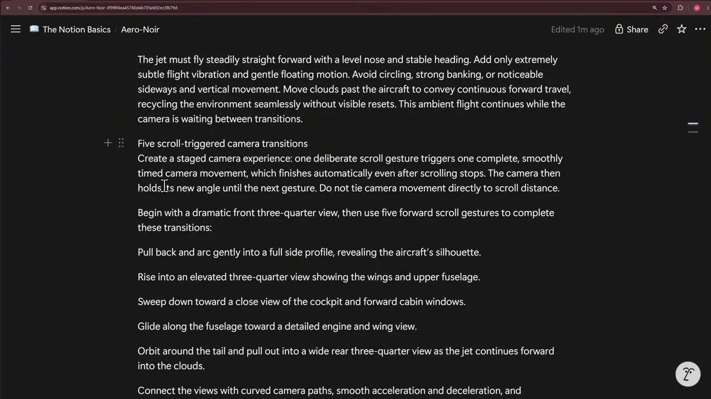
프롬프트의 여섯 장면을 한 줄로 놓으면 아래와 같아요. 시작 장면 하나에 스크롤 다섯 번이 붙어요.
프롬프트 마지막에는 오디오 설계가 있어요. 배경 음악을 만들어 넣되, 방문자가 소리 버튼을 직접 켰을 때만 재생하게 해요. 로딩 화면, 반응형 카메라 구도, reduced motion 옵션도 요구하고, 직접 빌드해서 미리보기를 확인하고 문제를 고치라고 시켜요.
모델 고르고 보내기
프롬프트를 붙인 뒤 모델을 고를 수 있어요. 위쪽에 첨부한 구름 이미지와 GLB 파일(fighter jet 3d model (1).glb)이 보이고, 오른쪽 메뉴에 Auto(추천)와 Fable 5.1, GPT 6 Astra, Opus 5.5, Sonnet 5.5, GPT 6.1 Sol이 있어요. 발표자는 Opus 5.5를 골라 보내요. 설명이 더 필요하면 Runable이 되묻기도 한다고 해요.
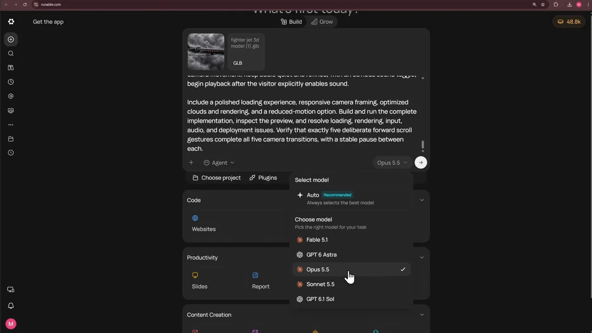
에이전트가 남긴 보고
작업이 끝나면 에이전트가 무엇을 했는지 정리해 줘요. 맨 위에 'Worked for 59m 35s'가 보여요. 한 시간 가까이 걸린 셈이에요. 프롬프트에는 '첨부한 에러 스크린숏의 호환성 문제를 피하라'는 문장이 있었어요. 그런데 실제로 첨부된 건 구름 참고 이미지뿐이었어요. 그래서 에이전트는 에러를 직접 못 봤다고 밝히고, 흔한 원인을 미리 피했다고 적어요.
- React Three Fiber 대신 plain
three를 썼어요. 이 템플릿의 React 19와 자주 깨지기 때문이래요. - Draco 디코더나 CDN(Content Delivery Network) 로더를 쓰지 않았어요.
- GLB 이름의 괄호가 URL(Uniform Resource Locator)을 깨뜨릴 수 있어
/models/jet.glb로 바꿨어요.
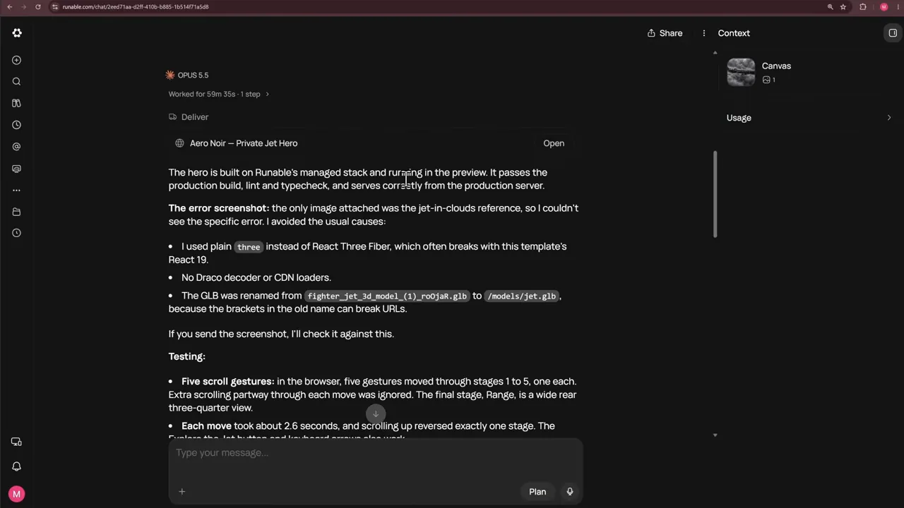
보고에서 더 눈여겨볼 곳은 Not verified(확인 못 한 것) 목록이에요. 샌드박스에 그래픽 카드가 없어 초당 1~3프레임으로 렌더링되니 실제 부드러움은 판단할 수 없었대요. 그래서 진짜 기기에서 확인해 달라고 해요. 90초짜리 배경 음악과 엔진음, 바람 소리도 직접 들어 보지는 못했고, 모바일 스와이프도 실제 폰으로 시험하지 않았다고 적어요. 바로 아래 Placeholder content 항목에서는 기체 이름 'Aero Noir · AN-7'과 스펙 숫자가 자기가 지어 넣은 자리 표시용 문구라고 밝혀요. 공개 전에 실제 정보로 바꾸라는 뜻이에요.

완성된 히어로
미리보기를 열면 로딩 애니메이션 뒤에 화면이 서서히 나타나요. 가운데에서 GLB 제트기가 날고, 왼쪽 아래에 'The quiet above the storm.' 문구가 있어요. 오른쪽 위에는 Full motion 버튼과 'SOUND ON' 버튼이 있어요. Full motion을 누르면 reduced motion으로 바뀌어 기체 움직임이 느리고 작아져요. 소리를 켜면 배경 음악이 나오고, 스크롤 한 번에 첫 카메라 이동이 재생되면서 효과음과 함께 설명 문구가 바뀌어요.

나머지 섹션은 두 번째 프롬프트로
두 번째 프롬프트의 제목은 Complete the website예요. 이미 만든 히어로와 그 애니메이션은 건드리지 말고, Aircraft·Charter·Ownership·Contact 섹션과 푸터를 붙이라고 해요. 이번에는 참고 이미지나 영상을 하나도 주지 않아요. 글로만 설명해서 Runable이 얼마나 잘 디자인하는지 보려는 거예요. 그래서 섹션마다 레이아웃을 자세히 적었어요. 예를 들어 '1. Aircraft — interactive fleet showcase' 단락은 이렇게 적어요. 왼쪽에 큰 제목, 가운데에 세로로 움직이는 카드 열, 오른쪽에 설명을 둬요. 가운데 카드만 밝고 크게, 이웃 카드는 어둡고 작게 해요.
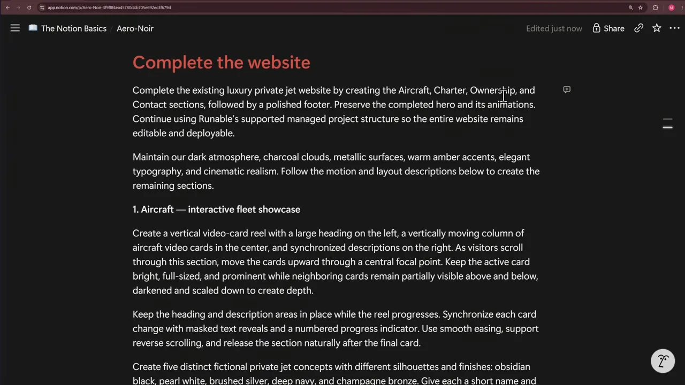
아래쪽 Asset generation 단락이 이미지·영상 생성 지시예요. 이미지는 GPT Image 2.5, 영상은 Seedance 2.5로 만들라고 도구 이름을 짚어 줘요. 일관된 정지 이미지를 먼저 만들고 그다음 움직이게 하래요. 영상은 5~10초짜리 대표 루프 하나와 3초짜리 카드 루프 5~7개로 정해 주고, 기체의 비율·날개·엔진·창·재질이 장면마다 같게 유지되게 해요. 효과음은 기존 사운드 설정을 따르고, 사용자가 켜기 전에는 재생하지 말라고 해요. Integration and quality 단락에서는 히어로의 마지막 카메라 이동이 끝나면 스크롤을 페이지로 넘기라고 적어요.
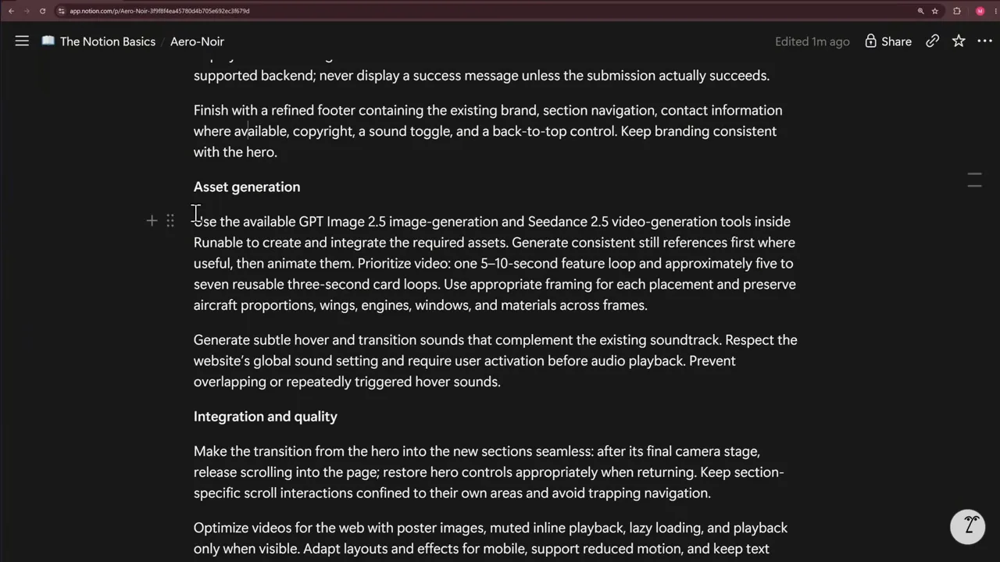
나온 결과
히어로는 그대로 남고, 그 아래 Aircraft 섹션이 이어져요. 왼쪽에 'Five ways to rise.' 제목과 01~05 기체 목록, 가운데에 카드, 오른쪽에 '03 / 05 Argent Vector' 설명이 있어요. 스크롤하면 카드가 위로 올라가며 다음 기체가 가운데로 오고, 위아래 카드는 작고 어두워져요. 오른쪽 설명도 활성 카드에 맞춰 바뀌고, 마우스를 올리면 작은 효과음이 나요.
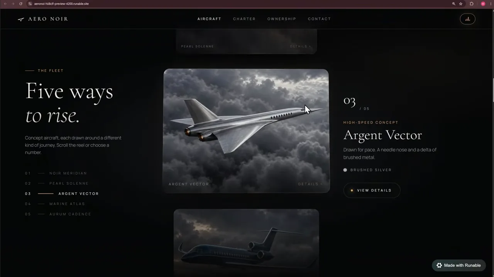
그다음은 Charter 섹션이에요. 구름 속을 나는 전용기 영상을 크게 깔고, 'Through the grey, on your time.' 문구와 'REQUEST A FLIGHT' 버튼을 둬요. 아래로 내려가면 'Every hour of the journey, considered.' 제목과 함께 전세 혜택이 위에서 본 기체 이미지 옆에 놓여요.
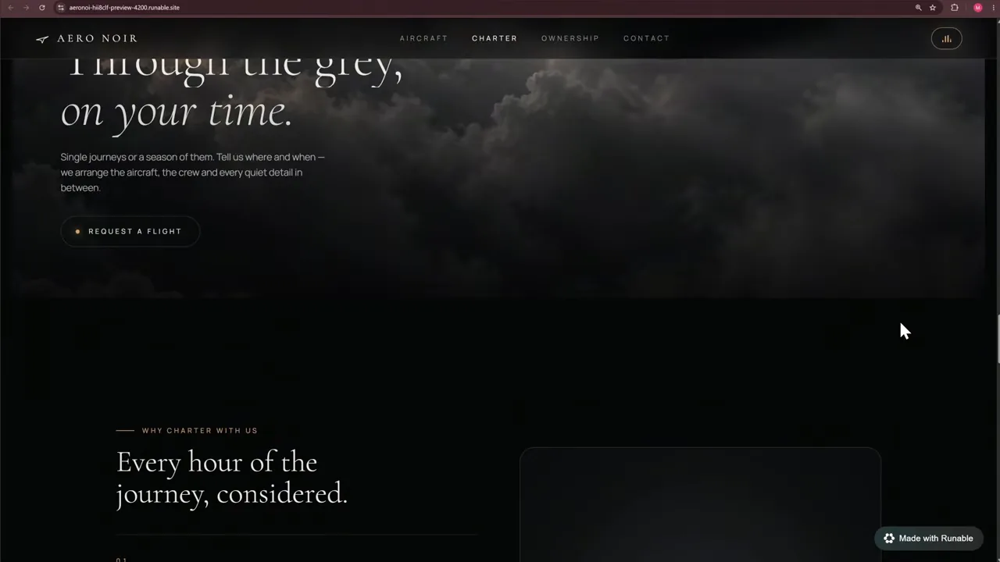
Ownership 섹션은 카드 배치가 달라요. 가운데 활성 카드 주위에 다른 카드들이 각도를 달리해 놓여 있고, 오른쪽 아래 화살표로 넘겨요. 아래 'A share, held in confidence.' 문구 옆의 'DISCUSS OWNERSHIP' 버튼을 누르면 문의 섹션으로 가요. 마지막 푸터에는 브랜드, 메뉴 링크, 소리 조절, 맨 위로 가기 버튼이 있어요.
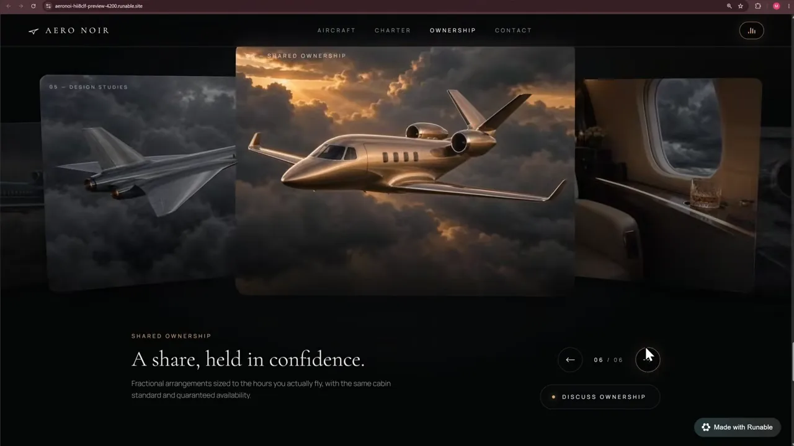
확인하고 배포하기
Runable 미리보기 위쪽에서 화면 크기를 모바일과 태블릿으로 바꿔 볼 수 있어요. 아래는 좁은 화면으로 바꾼 모습이에요. 제트기가 화면 폭에 맞게 작아지고, 'The quiet above the storm.' 문구와 'EXPLORE THE JET' 버튼이 그 아래로 내려와요. 발표자는 두 크기 모두 잘 맞는다고 해요.
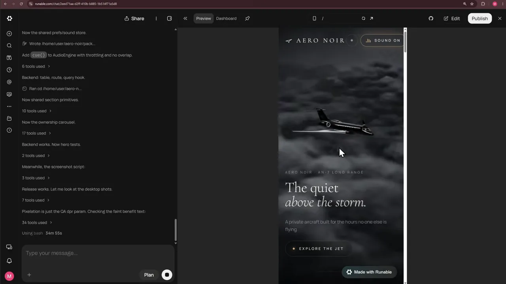
Dashboard의 관리 메뉴
미리보기 옆 Dashboard 탭에는 프로젝트 관리 메뉴가 있어요.
| 메뉴 | 하는 일 |
|---|---|
| Analytics | 방문과 활동 같은 프로젝트 성과를 봐요 |
| SEO(Search Engine Optimization) | 사이트 이름, 공개 여부, 설명, 공유 이미지, 파비콘을 정해요 |
| Domains | 서브도메인을 확인하고 커스텀 도메인을 사거나 연결해요 |
| Payments | 결제 기능을 붙이고 관리해요 |
| Secrets | API(Application Programming Interface) 키 같은 민감한 값을 안전하게 보관해요 |
SEO 화면을 보면 Website Name에 'Aero Noir', Visibility에 'Public'이 들어가 있어요. 사이트 설명도 히어로 내용을 바탕으로 이미 채워져 있고, 그 아래 OG(Open Graph) Image와 Favicon을 바꿀 수 있어요.

Secrets 화면은 Key와 Value를 넣는 Add Your Key 칸, 그리고 이미 등록된 키 목록이에요. 목록에는 NODE_ENV, DATABASE_URL, S3_BUCKET 같은 이름이 있고 값은 가려져 있어요. 이 밖에 GitHub 계정을 연결해 프로젝트를 새 저장소로 옮길 수도 있어요.
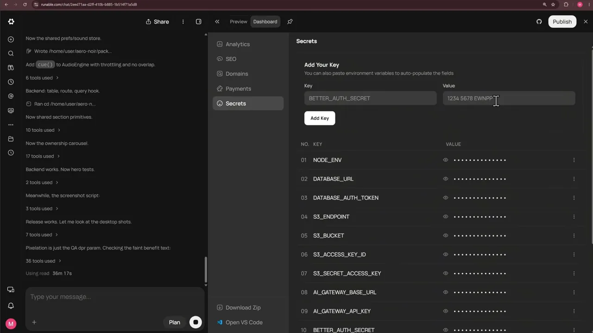
일부만 고치는 Edit
발표자가 '깜빡할 뻔했다'며 보여 주는 기능이 Edit이에요. 켜고 페이지에서 요소 하나나 섹션 하나를 고른 뒤 그 부분만 바꿔 달라고 할 수 있어요. 사이트 전체용 프롬프트를 다시 쓰지 않고 작은 디테일만 다듬을 때 쓸모 있어요.
Publish로 배포
마지막은 오른쪽 위 Publish 버튼이에요. 창에 'aeronoi-hii8clf.runable.site' 같은 서브도메인이 보이고, 연필 아이콘으로 바꿀 수 있어요. Add custom domain과 More Settings에서 공개 범위를 정한 뒤 Publish를 누르면 돼요. 발표자 말로는 1분이 안 걸려 공개 주소가 나오고, 그 주소를 누구에게나 바로 공유할 수 있어요.